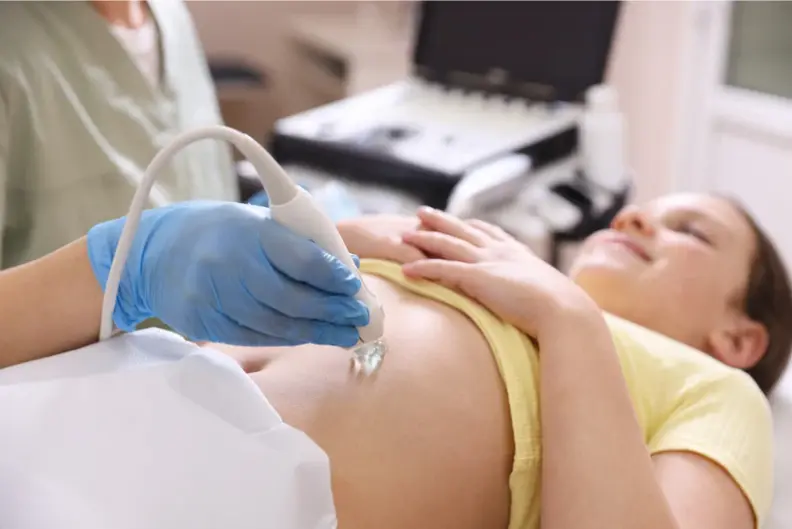
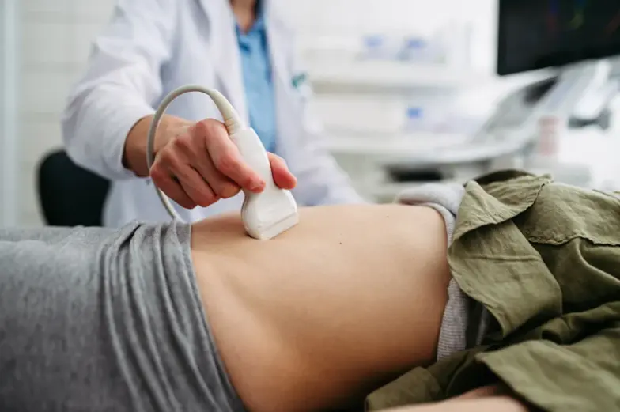
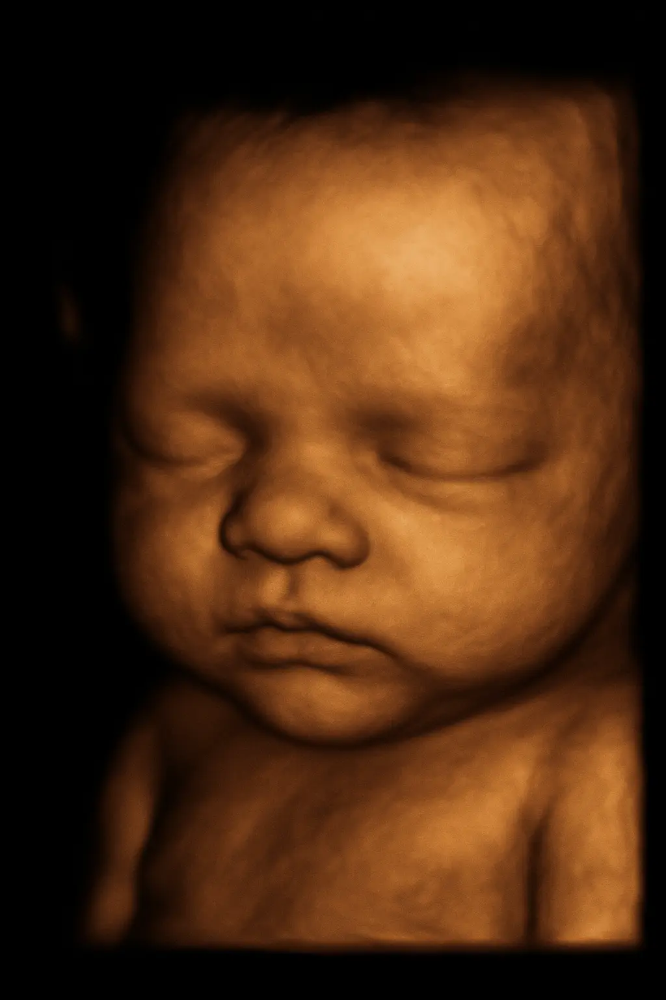
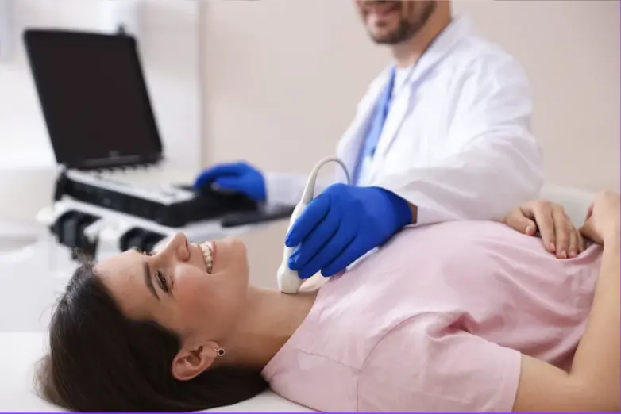
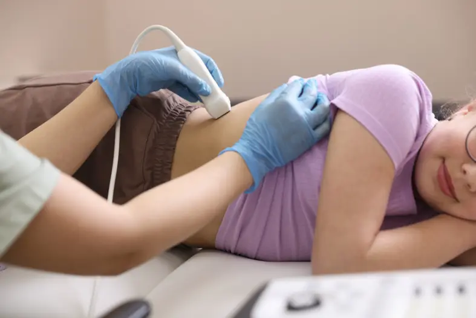
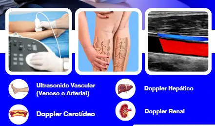
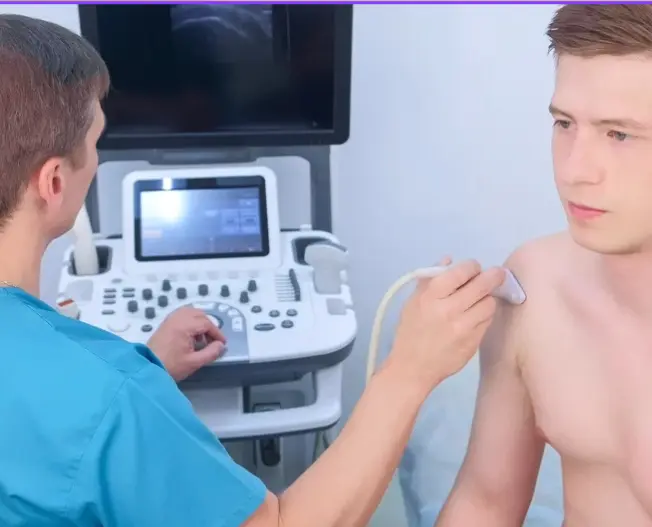
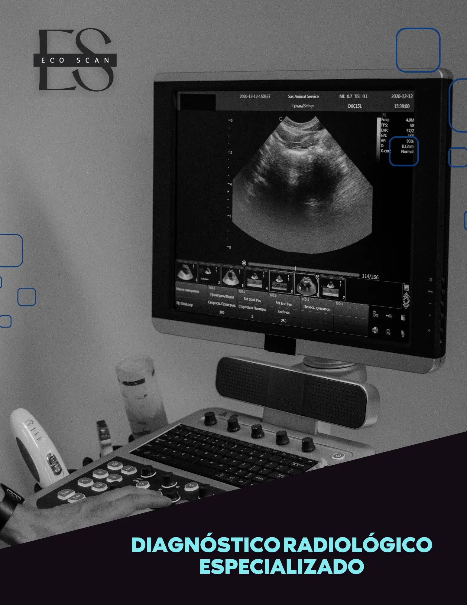

Diagnóstico Radiológico Especializado
Todos los estudios son realizados e interpretados por especialista en Radiología con certificación vigente, lo que permite detectar hallazgos sutiles, correlacionar con tus antecedentes clínicos y ayudarte a tomar mejores decisiones con tu médico tratante.








Estamos en Blvd. Antonio Madrazo 1102-Local C, El Cortijo, León de los Aldama, Gto. Fácil acceso desde vialidades principales y rutas de transporte.
Puedes iniciar la ruta directamente desde Google Maps con el botón “Cómo llegar”.